Qualitative research often begins with hand-coded analysis, where researchers create a codebook and apply categories to text manually
Imagine you have a giant pile of stories, surveys or interviews, researchers first make a list of buckets (this list is called a codebook). Then one by one, they read the text and put each piece into the right bucket.
Examples of buckets might be emotions such as happy, angry, sad; or topics about money, about family, etc. Researchers can freely decide the buckets they need.
This is called hand-coding because people do it by hand and not a computer. It works well but its slow and requires people who have been expertly trained. It also works the other way around, you can read the text and come up with buckets.
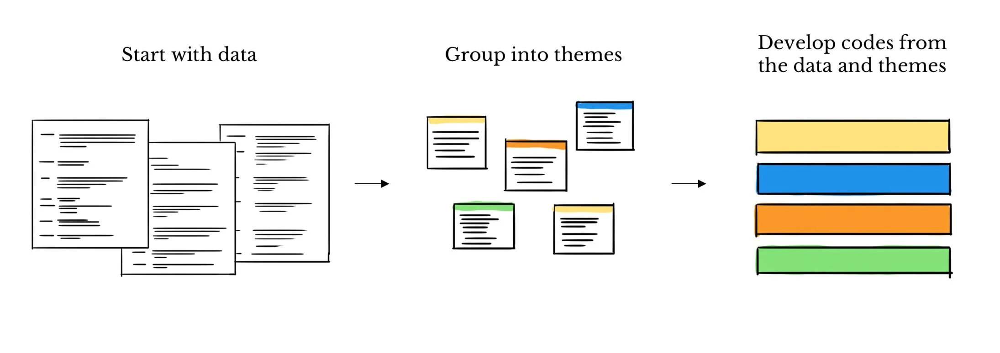
Imagine coding voter interviews into pre-set buckets like Economy, Healthcare, Immigration.
| Comment | Code (Bucket) | Why? |
|---|---|---|
| “Groceries and gas are too expensive.” | Economy | Clearly about financial concerns. |
| “I want better access to doctors.” | Healthcare | Fits the “Healthcare” bucket. |
| “The government should secure the border.” | Immigration | Matches the “Immigration” bucket. |
| “I don’t trust politicians at all.” | (none) | Doesn’t fit the pre-set buckets, so it’s skipped. |
Hand-coding takes a long time. So now, people sometimes ask lots of regular internet workers to help, this approach is called crowdsourcing.
Amazon Mechanical Turk (MTurk)
MTurk is an online marketplace for small tasks. Researchers or companies post simple jobs (like labeling sentences, clicking through images, or filling surveys). Workers around the world complete these tasks for small payments. In research, MTurk is often used to quickly get lots of human-coded data without hiring a big team of experts.
Example usage: A researcher who uploads 1,000 tweets and asks MTurk workers to tag them as positive, negative, or neutral.
Prolific is also an online platform for research participants, but it’s designed specifically for academic studies. Participants sign up to take part in surveys, experiments, and labeling tasks. Researchers like it because Prolific tends to have higher-quality, more reliable participants compared to MTurk. It also gives access to specific demographics (age, country, education, etc.), which is useful for social science studies.
Example usage: A political science researcher who runs a survey about voting behavior, targeting only UK residents, using Prolific.
Instead of only using experts, researchers pay many workers online to sort the text.
When two researchers code the same text, they don’t always agree.
Note
Why it matters: Inter-coder reliability helps show that your coding system is trustworthy and not just one person’s opinion.
Percent Agreement
Just count how often coders pick the same label. This is easy, but doesn’t account for chance.
Cohen’s Kappa (κ)
Adjusts for agreement that could happen just by chance. Values range from -1 (no agreement) to 1 (perfect agreement).
Krippendorff’s Alpha
More flexible. Works with multiple coders, different types of data, and missing values.
Often used in social science research.
In this section, we explored the foundational methods of qualitative text analysis, including traditional hand-coding and crowdsourcing approaches. These techniques, while effective, can be time-intensive and rely heavily on human expertise.
As we move forward, we’ll delve into how modern computational methods, powered by machine learning, are revolutionizing text analysis—making it faster, scalable, and more efficient. Let’s see how technology is transforming this process.
Machine Learning (ML) is a transformative field that combines statistics, computer science, and artificial intelligence to enable computers to learn from data and make predictions or decisions without being explicitly programmed.
What is ML?
ML focuses on building algorithms that can identify patterns in data, adapt to new information, and improve performance over time.
Why it matters for data analysis:
ML automates tasks like classification, clustering, and regression, making it faster and more scalable to extract insights from large and complex datasets.
ML is the backbone of modern data analysis, enabling researchers and organizations to unlock the full potential of structured and unstructured data.
We can split up ML-based methods into two categories: Supervised and Unsupervised learning.
In supervised learning, a model is trained on a dataset of documents that are already assigned human-provided annotations (labels).
Supervised learning typically takes 3 steps:
Before we can proceed with an analysis of our texts, we need to preprocess them using a series of steps.
We do this because supervised learning models cannot work with raw text1: Models like Logistic Regression, Support Vector Machines, and Naive Bayes are fundamentally mathematical algorithms that operate on numerical data. They have no inherent ability to understand strings of text.
Text preprocessing usually involves the following steps:
A token is a fundamental unit of text, often times a word, or a subword of a word, created by segmenting a larger string of text for a model to process.
Sentence: The pack of chihuahuas chased after the frightened cat.
List of tokens: ['the', 'pack', 'of', 'chihuahua', '##s', 'chased', 'after', 'the', 'frightened', 'cat', '.']
String of tokens: the pack of chihuahua ##s chased after the frightened cat .An example using bert-based-uncased’s autotokenizer.
A stopword is an extremely common word in natural language, such as “the,” “a,” or “is”, that is often removed from text during preprocessing as it carries virtually no meaningful information on its own.
Since these words add noise without contributing any unique information, removing them allows the model to focus on the more meaningful words that actually differentiate documents.
Original Tokens: ['the', 'pack', 'of', 'chihuahua', '##s', 'chased', 'after', 'the', 'frightened', 'cat', '.']
Tokens (stopwords removed): ['pack', 'chihuahua', '##s', 'chased', 'frightened', 'cat', '.']
Sometimes, a researcher may want to add a few additional preprocessing steps. These can include:
Text normalization can often be useful, but it isn’t strictly necessary.
In fact, stemming and lemmatization of tokens can reduce topic readability as well as conflate terms with different meanings1.
That’s not to say don’t stem/lemmatize, just dont do so blindly– think very carefully about why you doing so and how it affects your model.
ML models are fundamentally based on math, so they require structured numerical data. Vectorization is the process of translating unstructured text into a numerical format.
Different vectorization techniques result in different interpretations of the resulting vectors of numbers. The two simplest vectorization methods are Bag of Words (BoW) and TF-IDF.
Consider a spreadsheet where each column corresponds to a document, and each row is the the number of times each word (in the document) shows up in the document.
Example:
Sentence: “The pack of chihuahuas chased after the frightened cat.”
Its BoW representation: \(<2,1,1,1,1,1,1,1>\)
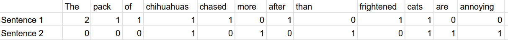
Recall the BoW representation of the two sentences from the previous slide. Now imagine if instead of each document being a single sentence, it was hundreds– even after stopword removal, very frequent words would still dominate and be considered important. Are they actually important? Probably not.
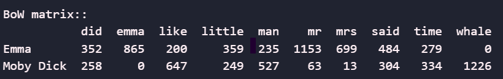
What if instead of looking at aggregate counts for words, we looked at their importance relative to other documents?
TF-IDF calculates a word’s importance by multiplying its frequency within a document by a score that increases for words that are rare across the entire collection of documents, and penalises for words that are common across documents.
Note
TF-IDF works best with corpora containing many medium-length texts (ex: collections of news articles). In general, the more documents we have, the better this method will perform.
R Language :
Python Language:
Supervised methods usually fall into two categories: regression and classification.
Regression is used to predict numeric or continuous value (ex: predicting which year a given court case is from based on its language)
Classification is used to predict class labels or group membership (ex: predicting if the author of a tweet is a Republican or Democrat)
An illustration of a regression task versus a classification task. Credit to
Below, we will provide an overview of a few foundational methods commonly used in supervised learning for text analysis.
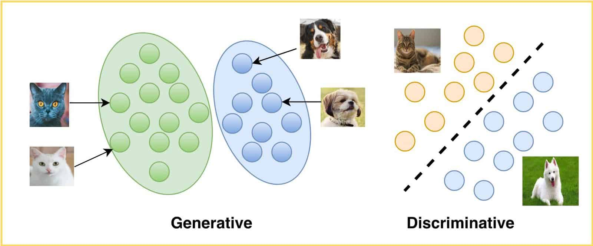
Below are the results of running each of the three methods discussed on a set of sentences from Moby Dick and Emma.
We’ve limited the bag of words vectorizer to build a vocabulary of the top 20 most frequent words, excluding common English stop words.
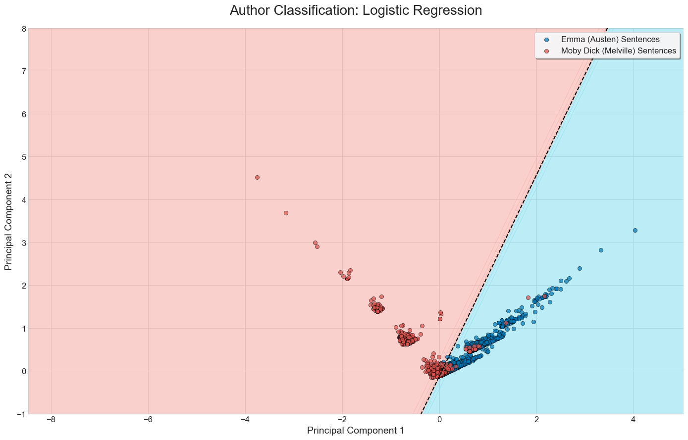
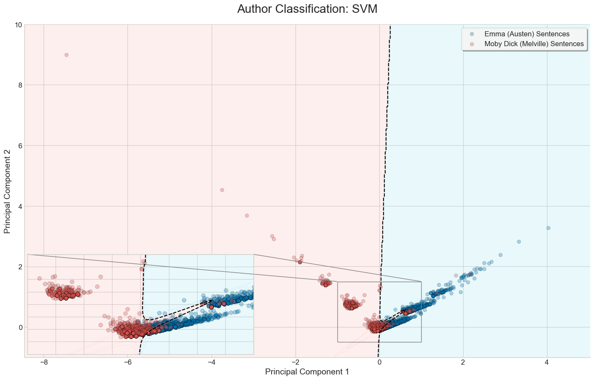
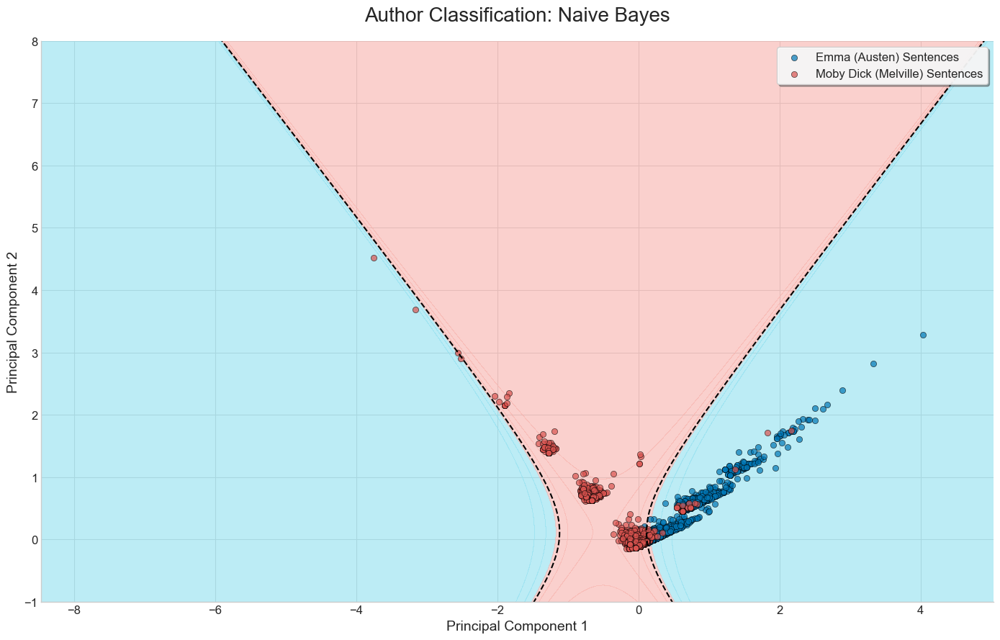
Thus far, all the examples of statistical methods we’ve covered are instances of supervised learning. In supervised learnings, we already know what our labels are going to be, the task is assigning the right labels to the right sentences.
Problems: What if we didn’t know what our labels were? What if we wanted to infer the labels soley from the features found within our data?
Unsupervised learning uses ML algorithms to discover hidden patterns and structures in our data, based solely on its features, without any predefined labels to guide the process.
Examples: Clustering, topic modelling, word embeddings
A topic is a label that is assigned to textual data which details the subjects within the text1. Consider the following two sentences:
French cuisine is some of the best in the world, despite the often lack of spices.
I’ve always loved Japanese food, mainly because I prefer fish raw rather than cooked.
What topic would you assign to each of the two texts? “French food” and “Japanese food” might come to mind. What about the next pair of sentences?
French cuisine is some of the best in the world, despite the often lack of spices.
Dogs are very loud and unhygenic, yet people still love having them around.
What topics would you assign now? Even though sentence 1 is the same as in the previous example, a more general description of “food” might make more sense here.
A cluster is the formal name for the group of texts that an algorithm identifies as being similar before we assign a topic label. The goal of a clustering algorithm is to find these natural groupings in the data automatically, without any human guidance.
We can partition clustering methods into two sets: Hard clustering methods and soft clustering methods.
Hard clustering methods assign texts to a single topic. For example, a text can either be about food, about dogs, but not both. The two most famous examples of this are k-means and hierarchical clustering.
K-means Clustering is the simplest form of clustering:
Hierarchical Clustering is a method of cluster analysis that seeks to build a hierarchy of clusters.
Use Hierarchical Clustering when the number of natural clusters in the text is unknown, and the primary goal is to simply explore the relationships between documents. Ideal for small(er) datasets.
Soft clustering methods, unlike hard clustering, allow a single text to belong to multiple clusters with varying degrees of membership. This is particularly useful when texts contain overlapping themes or topics. For example, a document discussing “climate change” and “economic policy” could be partially assigned to both clusters. A typical example of this is Latent Dirichlet Allocation.
Latent Dirichlet Allocation (LDA) is an unsupervised learning algorithm used for topic modeling, that discovers topics from a collection of documents by identifying words that frequently appear together.
Like K-means, the number of topics must be specified manually, with there being no right answer. It quickly becomes a game of trial and error.
LDA is ultimately a BoW model, so it doesn’t understand context. Adding bigrams/trigrams might help, but polysemy remains an issue.
Despite its limitations, LDA remains a powerful tool for unsupervised topic discovery and dimensionality reduction. Instead of relying on thousands of words as features for a supervised ML model, we can use the more concise topic distributions generated by LDA.
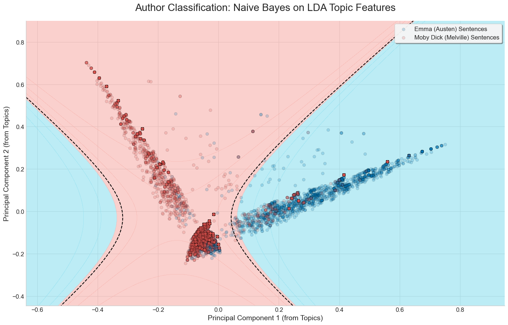Naive Bayes on the Emma/Moby Dick dataset. This time, each sentence’s position is determined by the prevalence of topics, discovered via LDA.
Recall how we mentioned vectorization methods like BoW and TF-IDF are context insensitive? Word embeddings are another vector representation of text, which is context-senstive.
In short, a word embedding model is trained on a massive corpus of text to create dense numerical vectors for words by learning from their context. We can then apply that word embedding model onto our own corpus to generate a set of context-sensitive vectors for our texts.
Consider two sentences: “The film was incredible” and “That movie is amazing”.
As word embeddings capture semantic meaning, a word embedding model would correctly notice that the two sentences are quite similar.
Word2Vec creates word embeddings using two architectures: CBOW (predicts a target word from its context) and Skip-Gram (predicts context words from a target word).
The primary issue with Word2Vec is that the resulting vector representations are static: each word has exactly one, fixed vector representation. Hence, the vector representations of the words in the sentences “The dog chased after the cat” and “The cat chased after the dog” are identical.
What if instead we could generate dynamic embeddings, that change based on our textual corpus?
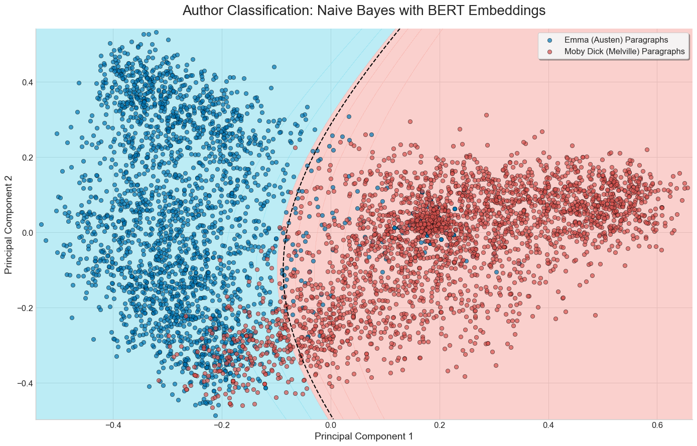
Natural Language Processing (NLP) is a branch of AI enabling computers to understand, interpret, and generate human language, it combines computational linguistics with machine learning and deep learning.
NLP plays a critical role in computational text analysis by providing the tools and techniques to process and analyze large volumes of unstructured text data:
As we delve deeper into computational methods, we will see how NLP bridges the gap between raw text and actionable insights.
At the core of NLP is the concept of dependency. Dependency is the process to analyze the grammatical structure in a sentence and find related words as well as the type of relationship between them.
An example of a parse tree for “He bought a new car.”
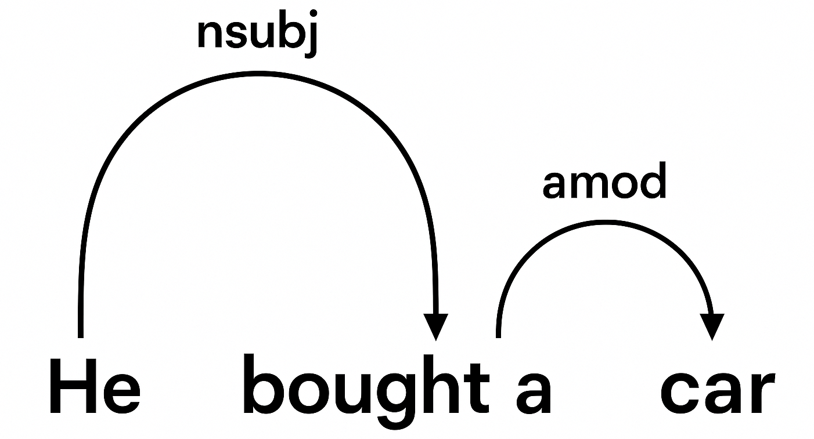.
These parse trees help explain meanings in complex sentences for the computer. They make a map of semantic meaning.
Named Entity Recognition (NER) is a technique in NLP that identifies and classifies named entities in text into predefined categories like person, organization, location, dates.
There are two steps in this process:
An example of this could be scanning a stock market report and extracting names of stocks and dates:
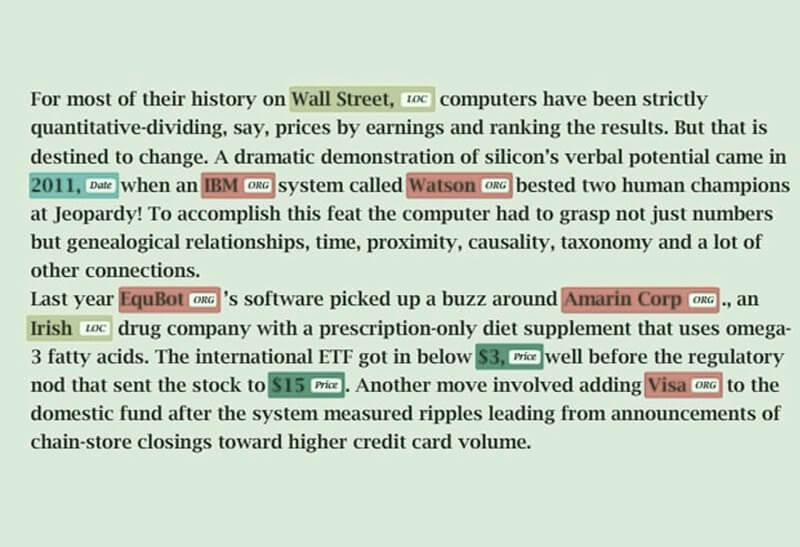
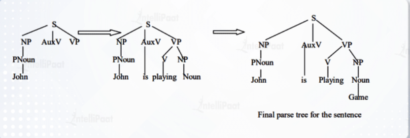
In the image above the Top-Down Parser looks through identifying that John is a noun, then moves back up and examines the next word until it finally reaches a full sentence structure.
Before diving into LLMs and its specific methods, let’s zoom out and see the big picture of transformer families (the brains behind LLMs).
Think of transformers as “readers” and “writers”.
| Model Type | Examples | Strengths | Weaknesses | Typical Use Cases |
|---|---|---|---|---|
| Encoder-only | BERT, RoBERTa, DeBERTa | Deep understanding of text; strong at context | Cannot generate long text | Classification (sentiment, spam, topics), NLI, embeddings, Named Entity Recognition |
| Decoder-only | GPT-3, GPT-4, LLaMA | Strong text generation; fluent and creative | Weaker at fine-grained text understanding; risk of hallucinations | Chatbots, drafting, coding, summarization, open Q&A |
| Encoder–decoder | T5, BART, MarianMT | Excellent at transforming input into output; strong for structured tasks | More complex training; higher computational requirements | Machine translation, summarization, question answering |
What is Natural Language Inference (NLI)? Natural Language Inference (NLI) is a task where a model is given two sentences and must decide if the second sentence makes sense based on the first.
Think of a student passing an exam on a subject they’ve never really studied before. That works because humans generalize from what they know. Zero-Shot Learning (ZSL) lets models do the same — applying knowledge to new tasks without ever seeing examples. Zero-Shot Text Classification
The model has to choose between three possibilities:
| Premise | Hypothesis | Answer Type | Why? |
|---|---|---|---|
| A man is riding a bicycle. | A man is outdoors. | Entailment (Yes) | Riding a bike usually implies being outside. |
| A man is riding a bicycle. | A man is swimming. | Contradiction (No) | You cannot ride a bike and swim at the same time. |
| A man is riding a bicycle. | The man is wearing a helmet. | Neutral (Maybe) | The premise doesn’t tell us if he is wearing a helmet. |
This task is important because it shows the model isn’t just matching words, it’s making an inference about meaning (reasoning).
Now imagine this: A student is able to pass an exam on a subject they’ve never studied. They do it by generalizing knowledge from other subjects.
Zero-Shot Learning (ZSL) works the same way for AI. Instead of needing thousands of training examples for a task, we can reframe classification as an NLI problem:
The model then tests: Does the premise support this hypothesis? The one that fits best is then chosen as the label.
For years, teaching computers to classify text meant building huge labeled datasets. You had to hand-code thousands of examples, as you had to teach the student (the model) before it could pass the exam. This was expensive and time-consuming.
This changed with BERT (Bidirectional Encoder Representations from Transformers)
These methods are powered by encoder-only transformers (models designed mainly to read text) like BERT, RoBERTa, and DeBERTa, which are strong at understanding relationships between sentences.
Zero-shot learning is not just for text.
For example, given a new photo of an animal, the model can choose between descriptions like “a photo of a zebra” or “a photo of a horse” even if “zebra” was never explicitly labeled in its training data.
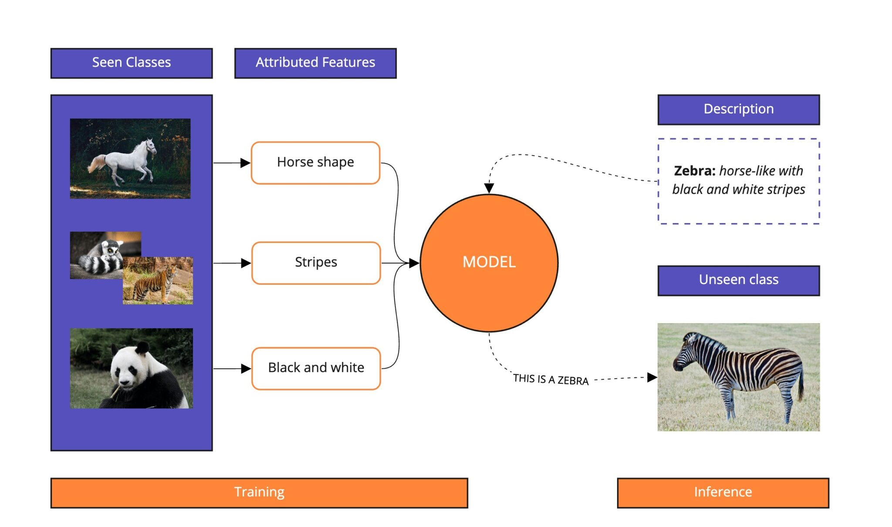Modulai Blog: *Zero-Shot Learning in NLP
Decoder-only transformers (pattern matchers like GPT) generate text one word at a time. With the right prompts, they can classify, summarize, or find patterns.
APIs vs. Chat
- APIs: They allow you to connect the model to your own system. Good for automation.
- Chat UIs: Easy to use and quick. Good for testing ideas. Local vs. Cloud
- Local: data stays private; needs hardware. - Cloud: easy access; data leaves your system.
Applications
- Auto-tagging document and moderating text
- Detecting customers intent in messages
- Drafting summaries and themes
Important
Watch outs - Models can “hallucinate” (make things up). - Results depend on how you phrase the prompt. - Privacy risks if data leaves your system. - Costs add up if used at scale.
There are four main ways we can get large language models (LLMs) to handle classification or generation tasks. They range from the simplest, asking the model directly (such as when we generally use ChatGPT), to the most advanced – retraining it on your own data (teaching a model).
Tip
Think of it as a ladder:
Start with zero-shot, move up to few-shot, then RAG, and finally fine-tuning.Each step gives the model more guidance.
LLMs can be used in two main ways:
Both have strengths and weaknesses, depending on their applications.
Think of an API as a “pipeline”: You send text to the model in the background, and it sends a response back. There is no chat window, it runs quietly inside your systems.
Note
Use Case: Parliamentary Debates with APIs
Suppose you have thousands of pages of parliamentary debate transcripts. An API can automatically sort speeches into categories like economic policy, immigration, or climate change — without hand-labeling every document.
This helps researchers trace how issues rise and fall over time, while still leaving room for close reading of key passages.
This is the familiar conversational window — you type, the model replies.
In practice, most research teams combine both approaches:
Do you run the model on your own machine (local), or do you send data to a company’s servers (cloud/hosted APIs)?
Important
UBC Policy Reminder
All researchers at UBC must follow UBC’s data security and privacy rules:
Rule of thumb: If your data includes interviews, transcripts, or personal information, you likely need to keep it local or use UBC-approved services.
Important
Cost Considerations: APIs at Scale
When using APIs, pricing is typically based on the number of tokens (small chunks of text) processed. For example:
Example Scenario: A company processes 10,000 customer reviews daily, with each review consisting of 100 input tokens and generating 50 output tokens.
Understanding these costs is essential for budgeting and scaling API usage effectively.
| Local Models | Cloud/Hosted APIs |
|---|---|
| Privacy & control | Easy & instant access |
| Needs hardware setup | No setup needed |
| Good for sensitive data | Best models available |
| Higher upfront effort | Ongoing usage costs |
Important
Rule of thumb:
Another very important component of doing text analysis and working with Aritifical Intelligence more generally is AI Ethics. From IBM:
“Examples of AI ethics issues include data responsibility and privacy, fairness, explainability, robustness, transparency, environmental sustainability, inclusion, moral agency, value alignment, accountability, trust, and technology misuse.”
Some solutions to this are:
Both of these techniques still do not fully eliminate the bias just mitigate it, so it is important to acknowledge and sign the bias in any work you are doing. This allows readers to understand the limitations of the model and have a greater understanding of the results.
A current case of AI Ethics being neglected comes from the sub-reddit r/changemyview. Where researchers from the University of Zurich conducted an unauthorized experiment to study AI-driven persuasion on real people. They used bots who posed as real people in order to try to persuade real people to changing their world views and posted over 1,700 comments.
These AI bots pretended to be many things including:
This study went against the rules posted on r/changemyview and a complaint was filed against the University of Zurich and the Institutional Review Board (IRB). Even the IRB is not perfect as the study recieved IRB approval beforehand.
This case reached the news being published in the Washington Post, Atlantic and Science.org.
Following the news and intense criticism the researchers apologized and decided not to publish the formal results.
The bottom line is whenever performing any kind of research it is essential to be aware of ethics and proper conduct.
National University Library. Coding Qualitative Data Guide. Accessed 2025-08-18.
National University Library. Dissertation Center — Analysis and Coding Example: Qualitative Data. Accessed 2025-08-18.
Amazon. Amazon Mechanical Turk. Accessed 2025-08-18.
Prolific. Prolific for Academic Researchers. Accessed 2025-08-18.
Delve. The Essential Guide to Coding Qualitative Data. Accessed 2025-08-18.
Chen, M., Aragon, C., et al. Using Machine Learning to Support Qualitative Coding in Social Science Research. ACM Transactions on Interactive Intelligent Systems, 2018.
Mattingly, W. J. B. Topic Modeling for the People. Accessed 2025-08-18.
Antoniak, M. Topic Modeling for the People (Practical Guide). Accessed 2025-08-18.
Springer. Word Embeddings (Book Landing Page). Accessed 2025-08-18.
IBM. What is Natural Language Processing?. Accessed 2025-08-18.
Amazon Web Services. What is NLP?. Accessed 2025-08-18.
Towards Data Science. Natural Language Processing: Dependency Parsing. Accessed 2025-08-18.
IBM. What is Named Entity Recognition?. Accessed 2025-08-18.
LINCS Project. Named Entity Recognition. Accessed 2025-08-18.
Intellipaat. What is Parsing in NLP?. Accessed 2025-08-18.
Cogito Tech. Named Entity Recognition Overview. Accessed 2025-08-18.
Sánchez, Y. Zero-Shot Text Classification. Accessed 2025-08-18.
Modulai. Zero-Shot Learning in NLP. Accessed 2025-08-18.
Wikipedia. Zero-shot learning. Accessed 2025-08-18.
Devlin, J., Chang, M.-W., Lee, K., & Toutanova, K. BERT: Pre-training of Deep Bidirectional Transformers for Language Understanding. arXiv preprint, 2018.
IBM. AI Ethics: Principles and Practices. Accessed 2025-08-18.
Reddit. Unauthorized Experiment on r/changemyview. Accessed 2025-08-18.
Science.org. Unethical AI Research on Reddit Under Fire. Accessed 2025-08-18.